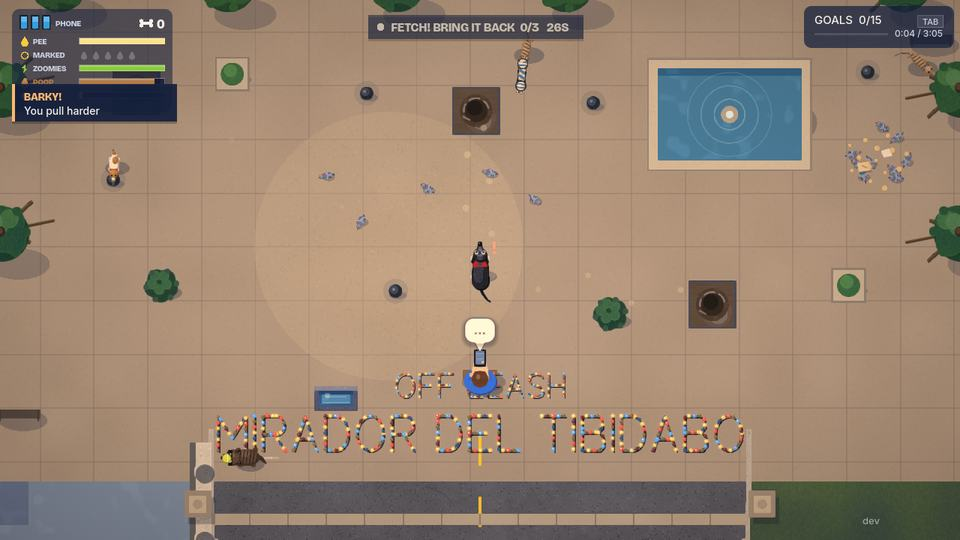

El Tibidabo
The hilltop fairground
Up the steep flanks of Barcelona's tallest mountain toward the old hilltop fairground, where the vintage funicular climbs the slope alongside cliffside coin viewfinders, spun-sugar stalls and string lights glowing above the city.
- Off-leash stop
- MIRADOR DEL TIBIDABO (Open plaça)
- Beat the clock
- Under 3:05
Screenshots



Goals (15)
- Mark 5 spots
- Have 4 good long sniffs
- Get the phone home without a scratch
- Get yourself home without a bump
- Get your business bagged
- Bring the ball back 3 times
- Bring Tofu the cat home
- Scarf down 2 dropped snacks
- Watch the vintage funicular climb the mountain
- Look through the cliffside viewfinder
- Land an x3 trick combo
- Swipe the cotton candy off the fairground cart
- Spell LEASH
- Find the hidden pernil
- Beat the clock (under 3:05)